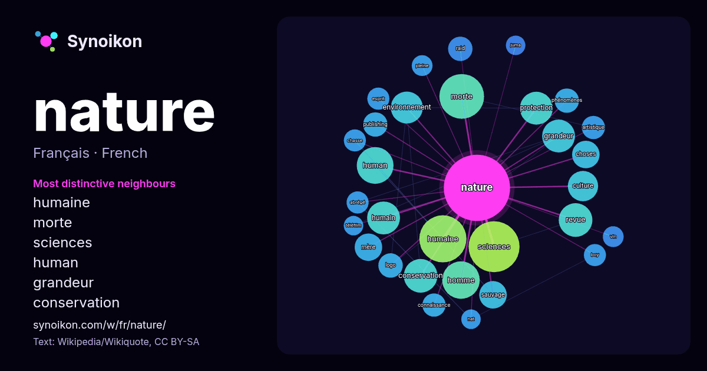

Français · mot populaire
nature
“nature” · Les mots trouvés autour de lui dans 1300 occurrences issues de Wikipédia, Wikiquote.

Voisins les plus spécifiques
- humaine 34×
- morte 30×
- sciences 26×
- human 25×
- grandeur 20×
- conservation 19×
- environnement 18×
- revue 14×
- humain 14×
- protection 14×
- sauvage 14×
- publishing 12×
- choses 11×
- logo 11×
- raid 11×
- boy 9.5×
- abrégé 9.3×
- phénomènes 9.3×
- homme 9.2×
- esprit 9.1×
× = combien de fois plus souvent que dans le texte général de Wikipédia.
Voisins les plus fréquents
- sciences 48
- humaine 41
- morte 37
- homme 26
- human 25
- france 24
- conservation 21
- revue 21
- grandeur 20
- humain 20
- protection 20
- environnement 19
- culture 17
- forme 17
- nom 17
- vie 17
- monde 16
- lois 15
- choses 14
- français 14
En contexte
- Pour les articles homonymes, voir Nature (homonymie). Ne doit pas être confondu avec Zone de nature sauvage. Cet article ne cite pas suffisamment ses Wikipedia snippets · Nature
- Pour les articles homonymes, voir Nature morte (homonymie). Une nature morte est un genre artistique, principalement pictural qui représente des éléments Wikipedia snippets · Nature morte
- nature (homonymie). Sciences de la nature Une chercheuse en sciences de la nature à l'EMPA suisse de Saint-Gall, en 1964. Les sciences de la nature ou Wikipedia snippets · Science de la nature
- homonymes, voir Nature (homonymie). La Nature Page de titre du premier numéro de La Nature, 1873 Supplément(s) Bulletin météorologique de La Nature (1889-1891) Wikipedia snippets · La Nature
- Pour les articles homonymes, voir Nature (homonymie). La nature (en grec physis / Phusis ; phy- : « croître, pousser, naître » avec le suffixe physis Wikipedia snippets · Nature (philosophie)
- Pour les articles homonymes, voir Nature (homonymie). Nature est une revue scientifique généraliste de référence, à comité de lecture et publiée de manière Wikipedia snippets · Nature (revue)
- Le nature writing (littéralement « écrire sur la nature ») est un genre littéraire né aux États-Unis dans une certaine tradition politico-philosophique Wikipedia snippets · Nature writing
- internationale pour la conservation de la nature Logo de l'IUCN. L'Union internationale pour la conservation de la nature (UICN, en anglais IUCN) est une Organisation Wikipedia snippets · Union internationale pour la conservation de la nature
Autres mots
- art
- automne
- carte
- chanson
- chat
- chemin
- cheval
- chien
- climat
- cloche
- cœur
- dieu
- désert
- eau
- famille
- forêt
- histoire
- hiver
- horloge
- jardin
- langue
- miel
- miroir
- monnaie
- montagne
- mort
- mère
- nourriture
- ombre
- pain
- pluie
- pont
- pouvoir
- printemps
- santé
- science
- sel
- silence
- temps
- tempête
- thé
- train
- travail
- trésor
- vie
- ville
- vérité
- étoile
- île
Précalculé le 2026-10-09 avec les paramètres par défaut (±5 mots, corpus moyen). La carte interactive peut l’actualiser avec des données en direct.
Interface traduite automatiquement ; corrections bienvenues.